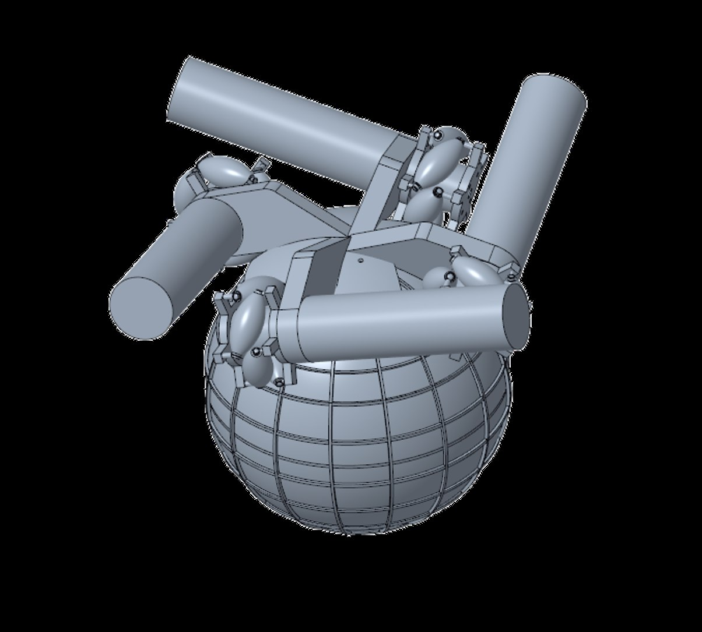

Engineering motion in every direction.
A student-engineered spherical drive system for ground vehicles and mobile robots.
A new direction for omnidirectional motion.
Magnetically Coupled Ball Drive 4.0 is a senior design project developing a spherical-wheel drive for ground vehicles and robots. The team is redesigning the magnetic coupling and mechanical subsystems to improve traction, maneuverability, reliability, and obstacle traversal.

One system. Five coordinated subsystems.
Our selected design integrates Mecanum drive wheels, a streamlined metal-plate yoke, a snap-fit spherical wheel, low-friction ball transfers, and magnetic coupling. Each subsystem is being developed to work together as one omnidirectional drive.
Magnetic coupling with a simplified external yoke.
The current concept positions permanent magnets on the internal support structure and uses a metal plate mounted to the external yoke. This is intended to retain the magnetic connection while reducing the magnetic debris accumulation associated with earlier yoke-mounted magnets.
See the analyses →